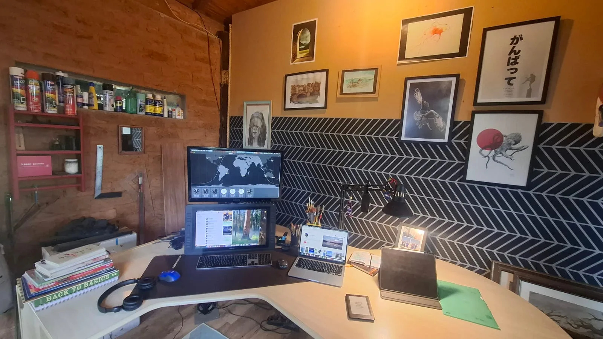

Brand Designer & Creative Director, working from my studio in the mountains of Piracaia, Brazil, with clients worldwide.
For thirty years I've helped companies find the meaning in what they do and give it a form people recognize, trust and remember.
Identities built as systems that in-house teams can run without me.
Technical or dense content turned into visual stories people actually want to read.
Packaging, print, signage, fleets, web and events.
The full journey, from first contact to the goodbye and after.
I use AI to explore and build faster (this site was designed and coded with Claude Code), and the final call stays human.
Clients and teams in New Zealand, Australia, the USA and Brazil.
Hard questions first, and all the way through: who you are, who you serve, what must be true.
Clarity is the baseline. Craft is what makes people stop, stay and remember.
A brand is only as strong as its weakest touchpoint, from the logo to the delivery van.
I start every project with a conversation. I want to understand your business, your people and where you're heading, and let the design grow from there.
A hospitality experience built from the ground up. I created the concept, modeled the architecture in Blender and built it by hand in one year, with my wife, my sons and a skilled friend. We designed the whole guest journey, from the first message to the goodbye and beyond. Today it ranks in the top 5% of homes on Airbnb, with 170+ five-star reviews.
I co-created a learning immersion for executives exploring the contrasts and opportunities of South Africa. With two partners, I scouted and mapped the destinations in Cape Town and shaped the storytelling and participant experience, with support from the Sustainability Institute.
One of Brazil's leading agribusiness companies. The relationship grew from brand identity into a strategic partnership. I built the foundations of the identity and set the direction so the in-house team could carry it forward on their own.
Art direction for a book produced by a team spread across five continents, with a foreword by Douglas Rushkoff.
Art director at Latin America's largest publishing house.
Speaker on #designcomsignificado (design with meaning) at Latin America's largest creativity festival, in a lineup that included David Carson.
A hackathon on creative approaches to food production. I brought my experience in aquaponics to the team, and together we designed a plan to apply it at industrial scale.
São Paulo, Brazil.
I draw every day, in charcoal, watercolor and graphite, with no client and no deadline. I write essays on design and meaning in From the Edge, on Substack. The hand keeps the eye honest.
“Design is not the lie told over the truth. It is the bridge that lets the truth be crossed by people who would otherwise turn back.”
Based in Brazil, 1 to 2 hours ahead of New York, so my working day overlaps almost entirely with US business hours.
The best way to start is an email with a few lines about your project.